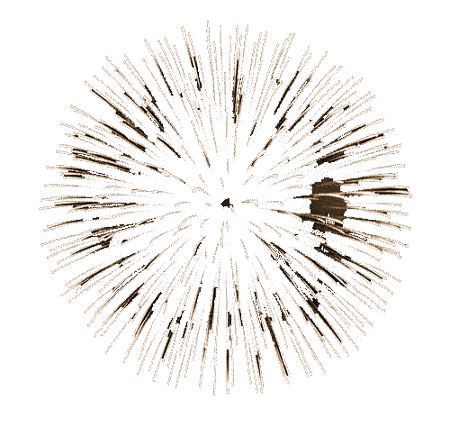
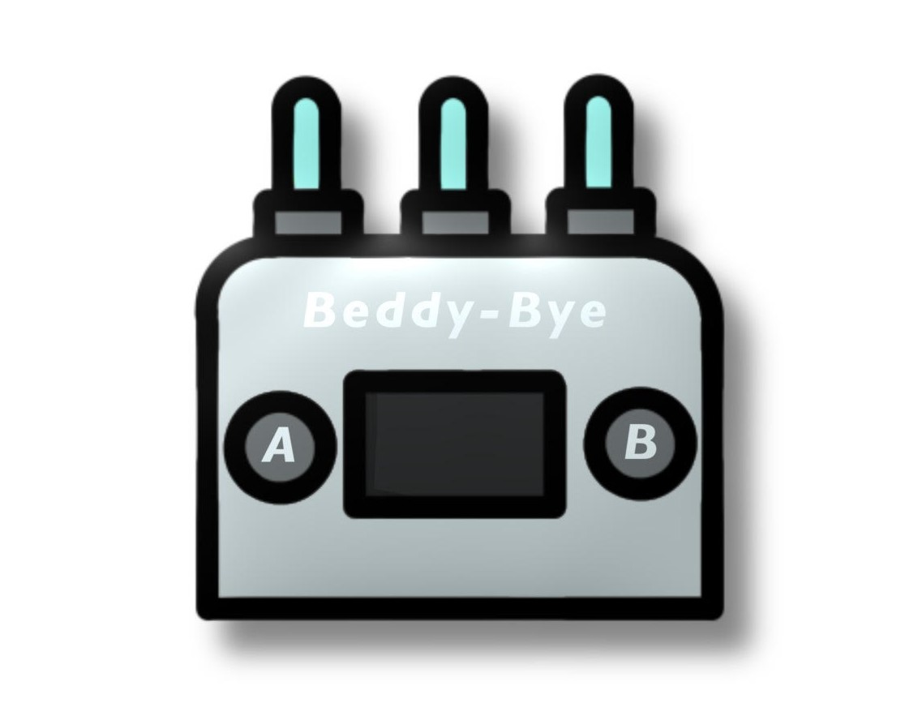

Beddy-Bye!
 "Its Beddy-Bye Time!"
Beddy-Byes goal:
Do you want to ensure that you and your little one gets a good night sleep? Beddy-Bye will guarantee those well needed zzz's! It will transform the way you sleep!
The Beddy-Bye works by removing many common distractions your baby may face when sleeping.
Whether it be the room being too cold, too warm, too dark, too bright or to quiet our product will eliminate those distractions.
With a long lasting battery life our product is your winning ticket to the perfect undisturbed night sleep.
How reliable is Beddy-Bye?